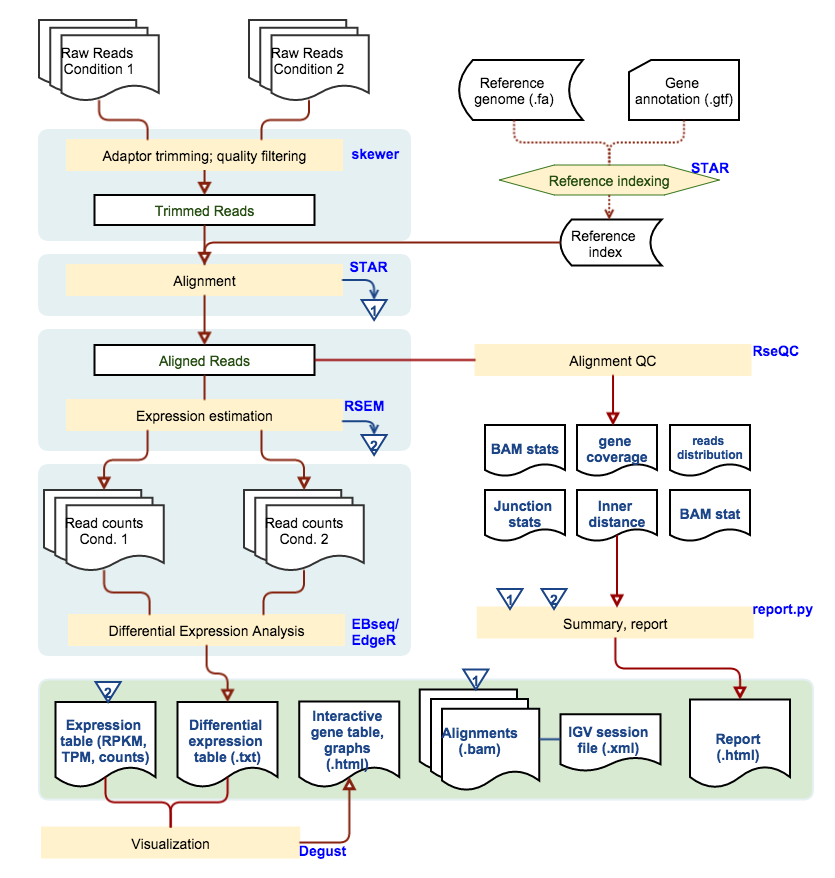

UW Biotechnology Center Bioinformatics Resource Center - {{time}}
[ TOP ]
Summary
| PI Name | {{PIname}} |
|---|---|
| Project Description | {{description}} |
| Sample | {{sample_num}} |
| Organism | {{organism}} |
| Reference Database | {{ref}} |
| Report Generation Date | {{report_time}} |
Method
Sequencing reads were trimmed to remove sequencing adaptors and low quality bases. And subsequently aligned to the annotated reference genome using aligner STAR [1]. Quantification of expression for each gene is calculated by RSEM[2], which produce both Transcripts Per Million reads (TPM), and expected read count. The expected read counts are used for differential gene expression analysis using EBSeq [3]
Data
{{trim_html}}
Alignments
{{alignment_html}}
mRNAseq QC
{{bam_qc_html}}
Differntial Expression
{{de_html}}
| Main Pipeline | v20150804 - Xiao-yu Liu |
|---|---|
| STAR | v2.4.2a |
| RSEM | v1.2.16 |
| EBSeq | v1.1.5 |
Please acknowledge BRC in your manuscript or presentation for the data analysis work. If you think our analysis contributes to your research intellectually please consider authorship for our bioinformaticians.
Please direct questions to: brc@biotech.wisc.edu